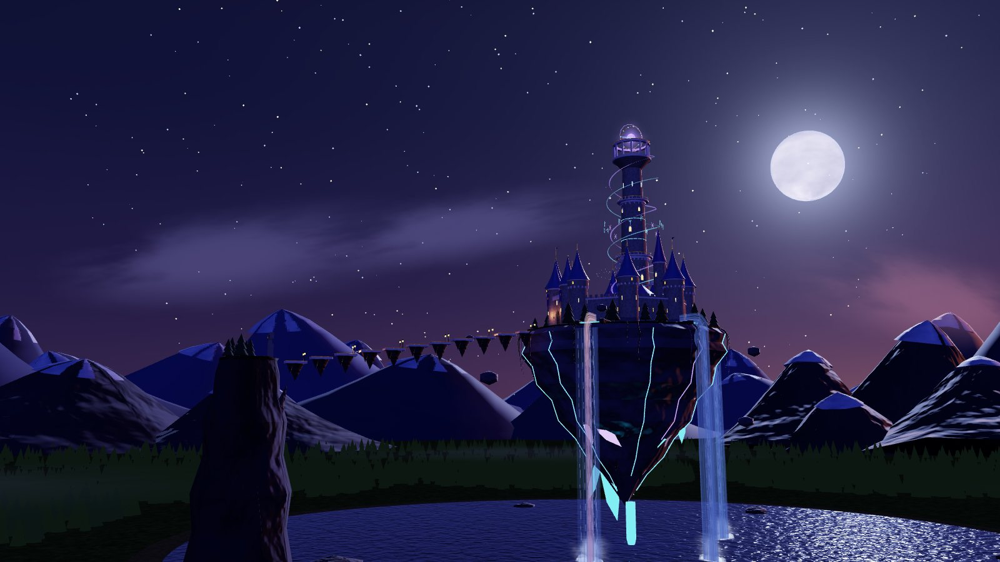

Written by hand
ES3D
A text file that describes the world. The browser builds it to fit your screen.
- Scene file
- 64 KB of text
- First visit
- 247 KB
- Drawn with
- WebGPU or WebGL2

One castle, two formats
The same flight through the same world, built two ways: from a hand-written ES3D file, or from an optimised glTF binary drawn by three.js.
Written by hand
A text file that describes the world. The browser builds it to fit your screen.
Exported and optimised
A binary of finished meshes, instanced and compressed. It opens in any 3D tool.
Both draw the same 54,787 objects, lights and animations along the same path, and each links to the other at its foot. A first visit counts everything the page sends, compressed as a browser downloads it: script, scene and textures.